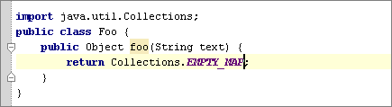

The Edit | Copy Reference action can be used to insert a reference to a field/method/class/file into the current position in the editor.
For example, go to the java.util.Collections JDK class, place the cursor within the EMPTY_MAP field and press &shortcut:CopyReference;:
Then return to your source code and press &shortcut:$Paste;:

You can also copy references in the GotoClass/GotoSymbol/GotoFile dialogs. Just press &shortcut:$Copy; on any element in the lookup list.